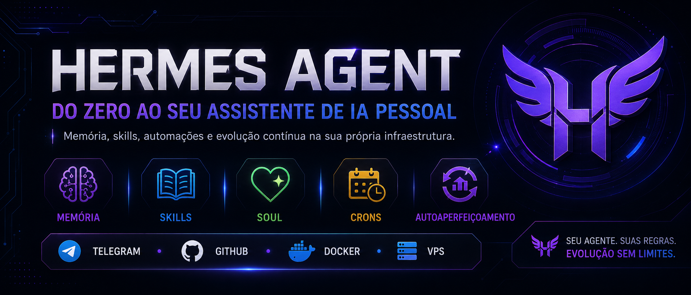

Learn how to configure, evolve and scale your own personal AI assistant with memory, skills, soul, crons and self-improvement. Open source, MIT, running on VPS, Docker, laptop or Termux.
StatsFrom concept to proactive agent scaling into production. Each track can be studied independently.
What it is, right mindset, where to run it and real use cases.
VPS, Docker, template, Telegram, GitHub and the first cron.
Memory, Skills, Soul, Crons and Self-Improvement Loop.
Tokens, .env, firewall, least privilege and recurring audit.
Comparisons with Claude Code, OpenCode, n8n, LangChain, CrewAI, AutoGen.
Multi-agent, dashboard, troubleshooting and ongoing maintenance.
Hermes is not a chatbot that you set up once and forget about. It's acoworkerthat needs to be trained: corrected when it makes mistakes, taught when it repeats, separated when it grows.
The secret is not to configure everything at once. It's about using, correcting, saving learning and evolving little by little. This course takes you down that path.